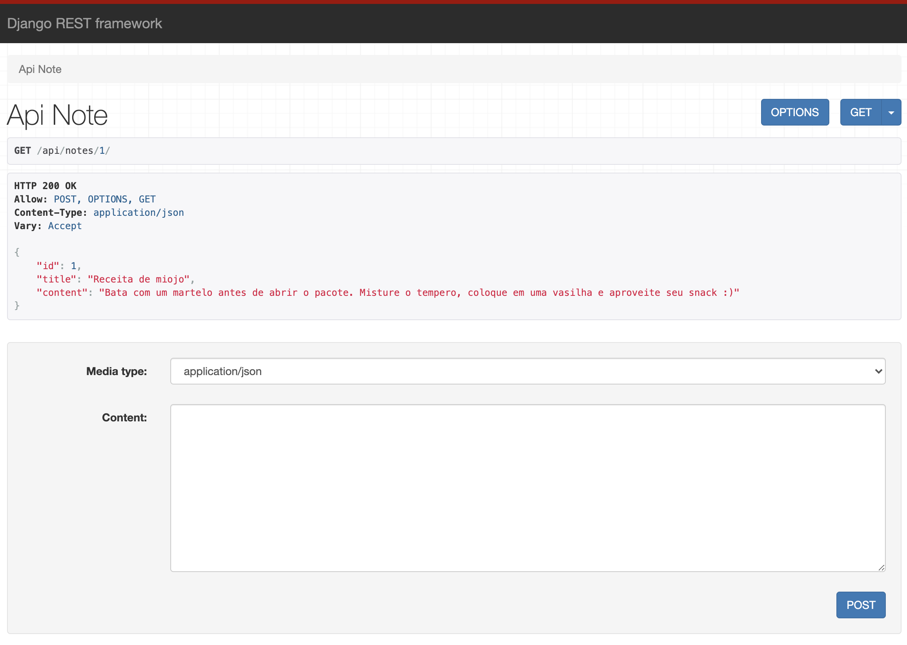
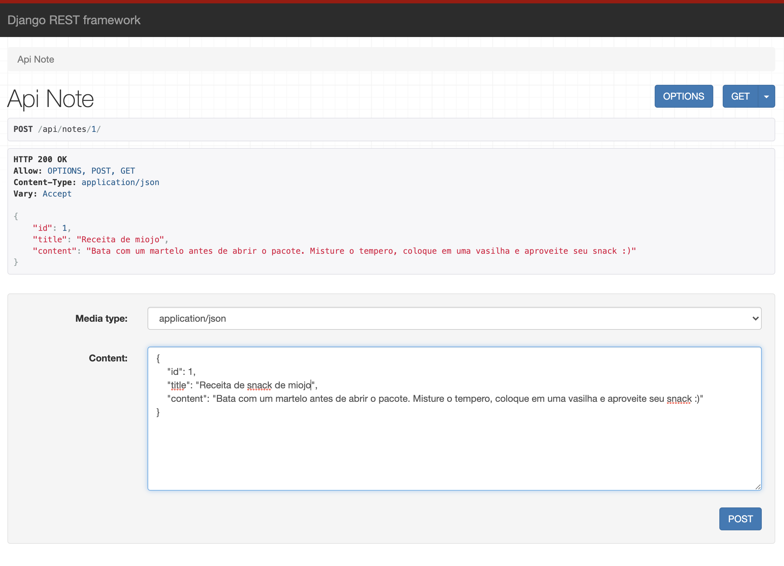
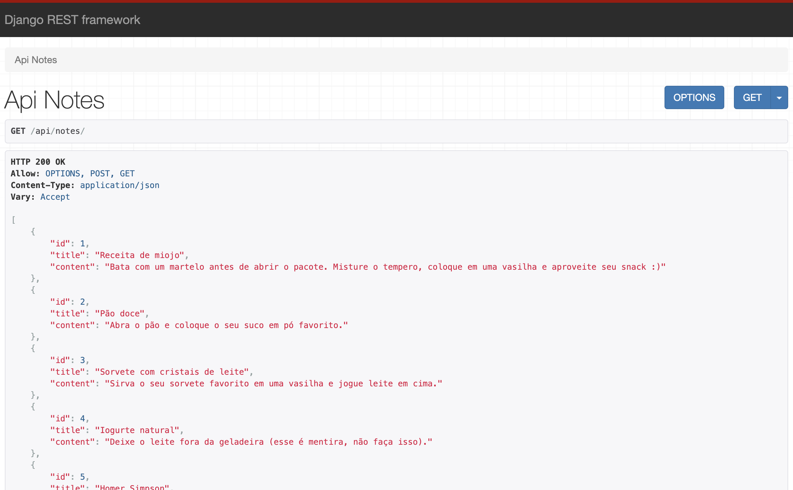
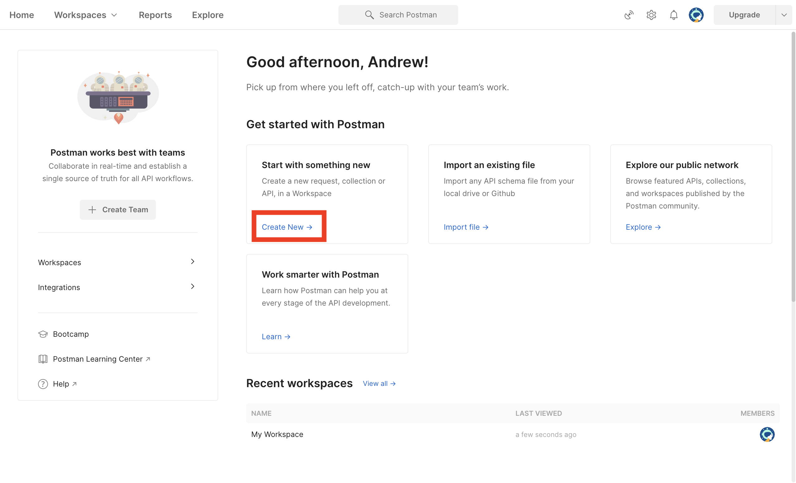
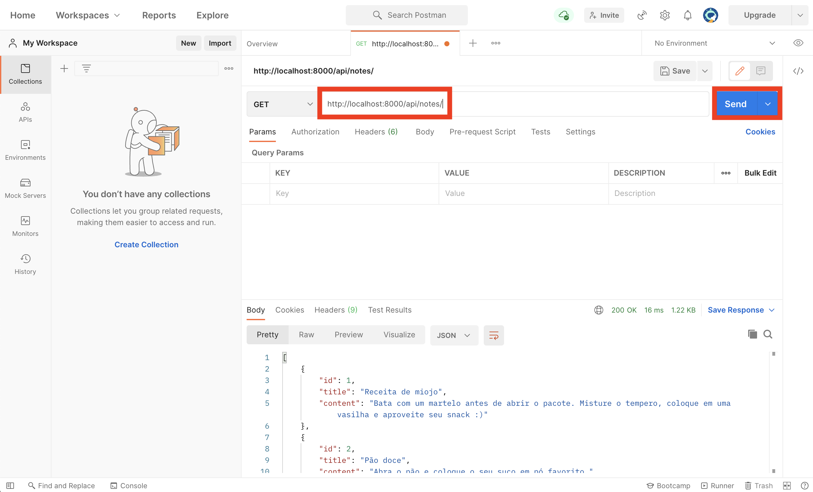

Django REST Framework¶
Já conversamos um pouco sobre REST na introdução da aula, mas para se aprofundar mais você pode encontrar excelentes documentações na internet.
O objetivo deste handout é disponibilizarmos uma API REST a partir do resultado do nosso Projeto 1B utilizando o Django REST Framework (DRF). Vamos começar com as instalações.
Primeiros passos¶
Importante
Lembre-se de ativar o ambiente virtual!
Instale o DRF e suas dependências:
pip install djangorestframework
pip install markdown
pip install django-filter
Precisamos indicar para o Django que queremos utilizar o DRF. Para isso, abra o settings.py do seu projeto e adicione 'rest_framework' aos INSTALLED_APPS:
INSTALLED_APPS = [
...
'rest_framework',
]
Aproveite para configurar o DEBUG como True e substituir o banco de dados pelo SQLite novamente, para facilitar o desenvolvimento:
# Resto do código...
DEBUG = True
# Resto do código...
DATABASES = {
'default': {
'ENGINE': 'django.db.backends.sqlite3',
'NAME': BASE_DIR / 'db.sqlite3',
}
}
# Resto do código...
Criando nosso serializador¶
O objetivo do serviço RESTful é disponibilizar recursos para o cliente. No nosso caso vamos trabalhar com o formato JSON, então o serviço deve saber como representar objetos do modelo (no caso as anotações) no formato JSON. Esse é o papel dos serializadores. Crie um arquivo notes/serializers.py com o seguinte conteúdo:
from rest_framework import serializers
from .models import Note
class NoteSerializer(serializers.ModelSerializer):
class Meta:
model = Note
fields = ['id', 'title', 'content']
A classe acima será utilizada pelo DRF para serializar objetos do tipo Note. O JSON gerado conterá os atributos 'id', 'title' e 'content'.
Criando as views da API¶
O DRF disponibiliza uma forma bastante enxuta de criação de views para APIs REST. Você pode (e até deve?) utilizá-la nos seus projetos, mas ela já encapsula alguns passos importantes. Como o nosso objetivo também é entender o que está acontecendo por baixo dos panos, vamos seguir pelo caminho mais longo.
Altere o arquivo notes/views.py adicionando as linhas a seguir:
from django.shortcuts import render, redirect
from rest_framework.decorators import api_view
from rest_framework.response import Response
from django.http import Http404
from .models import Note
from .serializers import NoteSerializer
# SUAS OUTRAS FUNÇÕES CONTINUAM AQUI
@api_view(['GET', 'POST'])
def api_note(request, note_id):
try:
note = Note.objects.get(id=note_id)
except Note.DoesNotExist:
raise Http404()
serialized_note = NoteSerializer(note)
return Response(serialized_note.data)
O código acima cria uma view do DRF que aceita GET e POST (vamos deixar o POST para depois). Quando uma requisição GET é recebida, a anotação é carregada do banco de dados, serializada utilizando a classe que criamos anteriormente e então o resultado é devolvido. Agora só falta criarmos a rota no notes/urls.py:
from django.urls import path
from . import views
urlpatterns = [
path('', views.index, name='index'),
path('api/notes/<int:note_id>/', views.api_note),
# Você possivelmente tem outras rotas aqui.
]
Muito bem, agora execute o servidor e acesse a página na rota api/notes/1 (assumindo que existe pelo menos uma anotação no banco de dados). O resultado deve ser parecido com este:

O próprio DRF gera a página de visualização, mas você poderia fazer a requisição através de um código JavaScript, por exemplo, e a resposta seria o JSON apresentado.
Implementando o POST¶
Deixamos o POST para depois, mas agora precisamos implementá-lo. Modifique a sua view adicionando as seguintes linhas:
# O resto do código continua aqui pra cima
@api_view(['GET', 'POST'])
def api_note(request, note_id):
try:
note = Note.objects.get(id=note_id)
except Note.DoesNotExist:
raise Http404()
if request.method == 'POST':
new_note_data = request.data
note.title = new_note_data['title']
note.content = new_note_data['content']
note.save()
serialized_note = NoteSerializer(note)
return Response(serialized_note.data)
A única diferença é que no caso do POST queremos editar o conteúdo de uma anotação. O request.data possui os dados enviados pelo POST em um dicionário. Portanto, utilizamos esses dados para atualizar a anotação, salvamos e depois voltamos ao fluxo normal da função, devolvendo a anotação atualizada. Note que a única diferença com o caso do GET é que não passamos pelo passo de modificar o banco de dados.
Você pode testar o POST entrando na mesma página, preenchendo um dicionário (JSON) com algumas alterações e clicando em POST:

Agora é com você!¶
Exercício
Implemente uma nova view do DRF para a rota api/notes/. Ao receber uma requisição GET ela deve devolver a lista de todas as anotações. Ao receber um POST ela deve criar uma nova anotação e devolver a lista de todas as anotações incluindo a nova.
Dica: você pode passar um argumento adicional ao serializador many=True quando o primeiro argumento é uma lista de objetos ao invés de um único objeto. O serializador do DRF usa essa informação para criar o JSON corretamente. Para saber mais leia a documentação.
O resultado esperado é algo semelhante a:

POSTMAN¶
Apesar de termos a visualização criada pelo DRF, pode ser útil usarmos ferramentas externas para nos auxiliar no desenvolvimento de APIs. O POSTMAN é uma ferramenta bastante utilizada para testes de APIs, portanto é interessante que você o conheca e saiba utilizá-lo minimamente.
Você pode instalar o POSTMAN a partir deste link: https://www.postman.com/downloads/
Depois de instalar, faça seu cadastro gratuitamente.
Depois de fazer o login, clique em "Create New":

Digite a sua URL e clique em "GET":

Os dados devem ser apresentados no quadro inferior. Você pode fazer requisições POST, salvar requisições para automatizar ou simplificar testes, entre muitas outras coisas. O nosso objetivo neste handout não é entrar nesses detalhes, mas recomendo que você aprenda a utilizar esta ferramenta. Ela será uma adição valiosa ao seu kit de ferramentas de desenvolvimento.